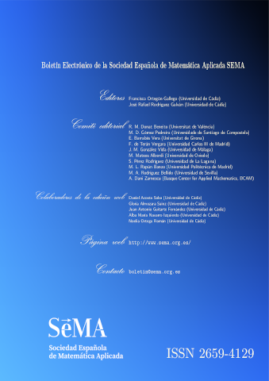

<!-- Sidebar/menu -->
<nav class="w3-sidebar w3-collapse w3-white w3-animate-left" style="z-index:3;width:300px;padding-top:0px" id="mySidebar"><br>
  <div class="w3-container">
    <a href="https://www.sema.org.es/"></a>
    <br/>
    <a href="img/portada.pdf"></a>
    </p>
    <!-- <h4><b>Índice</b></h4> -->
  </div>
  <div class="w3-bar-block">
    <a href="index.html" onclick="w3_close()" class="w3-bar-item w3-button w3-padding "><i class="fa fa-th-large fa-fw w3-margin-right"></i>Portada</a>
    <a href="editorial.html" onclick="w3_close()" class="w3-bar-item w3-button w3-padding "><i class="fa fa-th-large fa-fw w3-margin-right"></i>Editorial</a>
    <a href="institucionales.html" onclick="w3_close()" class="w3-bar-item w3-button w3-padding "><i class="fa fa-th-large fa-fw w3-margin-right"></i>Socios Institucionales</a>
    <a href="hacerse_socio.html" onclick="w3_close()" class="w3-bar-item
    w3-button w3-padding "><i class="fa fa-th-large fa-fw
    w3-margin-right"></i>Hacerse socio de la SEMA</a>
    <a href="#contacto" onclick="w3_close()" class="w3-bar-item w3-button w3-padding"><i class="fa fa-envelope fa-fw w3-margin-right"></i>Contacto</a>
    <p>
    </p>
  </div>
  <div class="w3-container">
    <p>
    <a href="img/contraportada.pdf">
    </a>
    </p>
  </div>
</nav>

<!-- Overlay effect when opening sidebar on small screens -->
<div class="w3-overlay w3-hide-large w3-animate-opacity" onclick="w3_close()" style="cursor:pointer" title="close side menu" id="myOverlay"></div>
